Марципан (marzipan) – пластичная миндальная масса с сахарной пудрой. Ею легко заменить классическую кондитерскую мастику. Ее можно использовать как для покрытия всего кондитерского изделия, так и для лепки фигурок. Рецепт марципана для торта несложен, но для его приготовления понадобится много миндаля, который стоит довольно дорого. Посмотрите мастер-класс, чтобы узнать, как сделать массу в домашних условиях.
Достоинства и недостатки марципана по сравнению с мастикой
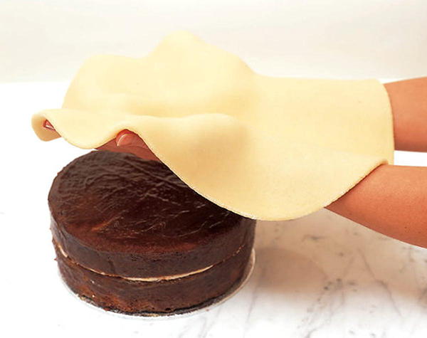
Главное преимущество марципана – это его вкус, более мягкий и насыщенный, чем у мастики. Если сахарная паста просто сладкая, иногда даже до приторности, то миндальная масса имеет множество вкусовых оттенков: легкая горчинка миндаля, сладость сиропа, насыщенный ореховый привкус. Не зря же из марципана даже изготавливают конфеты, просто покрывая его шоколадом.
Еще один его плюс – это податливость и эластичность. Из него легко вылепить украшения различной формы для свадебного, именинного или любого другого тортика. С другой стороны, полное покрытие им изделия практикуется редко. Он крошится и рвется, поэтому обычно его используют для обтяжки торта перед покрытием мастикой, для выравнивания поверхности.
Вместе с тем, если сравнивать марципановую массу с мастикой в плане эластичности и податливости, то последняя выигрывает – из нее создают более утонченные фигурки с множеством мелких деталей.
Важно!
Марципан стоит использовать в том случае, если вам не нравится приторная мастика, и вы не хотите испортить ею сбалансированный вкус торта. Однако маленькие и тонкие детали фигурок лепить из него довольно сложно.
Ингредиенты и инструменты
Перед тем как рассмотреть, как сделать марципан для торта, определимся с необходимыми ингредиентами и инструментами.
Вам пригодятся:
- сырой миндаль – 900 г (предварительно залейте его кипятком и оставьте так на пару минут);
- сахарная пудра – 470 г (просейте ее, чтобы не было комков);
- лимон – 1 штука;
- холодная вода – 130 мл.
Из инструментов:
- кухонные весы (точность важна, но можно обойтись и без них);
- кондитерский термометр (о том, как обойтись без него, читайте в описании шага №4);
- блендер или кофемолка;
- мясорубка (опционально)
- посуда.
Пошаговое приготовление
Теперь перейдем к пошаговому рецепту того, как приготовить марципан для торта.
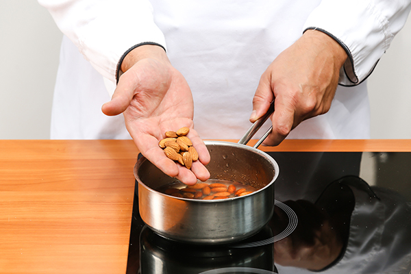
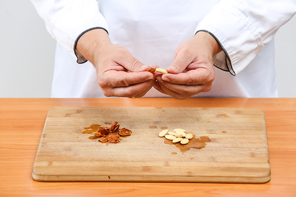
- Слейте жидкость, которой залили миндаль. Промойте его под холодной проточной водой. После такой процедуры он легко очистится – это важный шаг, иначе марципан будет в итоге серым.
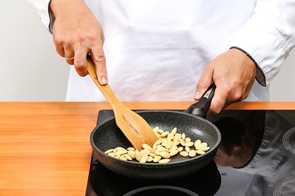
- Хорошо просушите миндаль бумажным полотенцем или прокалите на сковороде, ни в коем случае не обжаривая. Если на нем останется влага, масса получится более жидкой, чем должна быть.
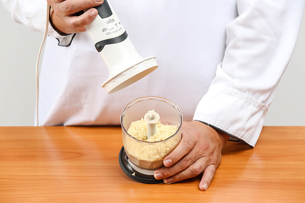
- Измельчите его блендером или кофемолкой, чтобы он стал мукой.
Полезно знать!
Не перегрейте орехи в кофемолке или блендере, иначе они выделят жир и превратятся в пасту, работать с которой будет очень сложно. Измельчайте в режиме пульсации, после каждого действия проверяйте чашу с миндалем.
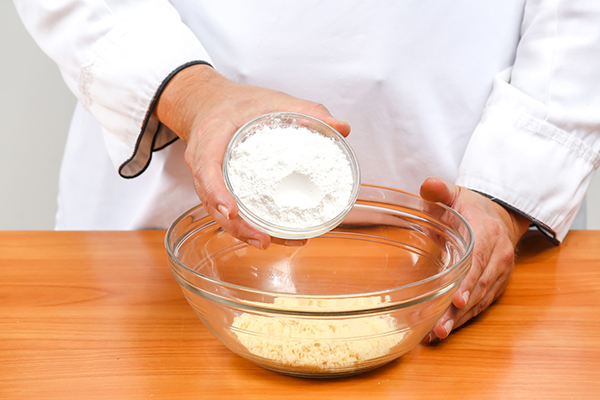
- Сделанную ореховую муку соедините со 100 г сахарной пудры и хорошо перемешайте.
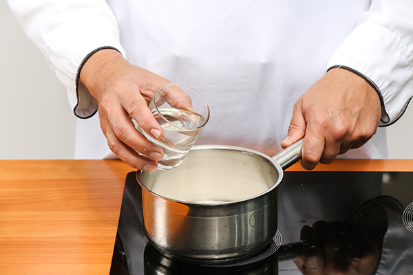
- Оставшийся сахар залейте водой, добавьте сок лимона и нагрейте до 118 С. Если у вас нет термометра, следите за тем, чтобы пудра полностью растворилась в воде, помешивая сироп. Когда он закипит, не трогайте его и не мешайте, слегка покачивая посудину туда-сюда, чтобы жидкость не пригорала к стенкам. Готовый сироп будет светлым, ни в коем случае не карамельного цвета.
Важно!
Не оставляйте сироп на плите без присмотра, он быстро превратится в тугую карамель, которая не подойдет для марципана. Чтобы проверить готовность, капните немного сиропа с ложки в миску с холодной водой и попробуйте скатать из него шарик. Если получилось – немедленно снимайте жидкость с огня.
- Влейте сироп в сахарно-миндальную смесь и хорошо перемешайте.
- Затем пропустите массу через мясорубку, чтобы она была однородной. Этот шаг можно по желанию не совершать.
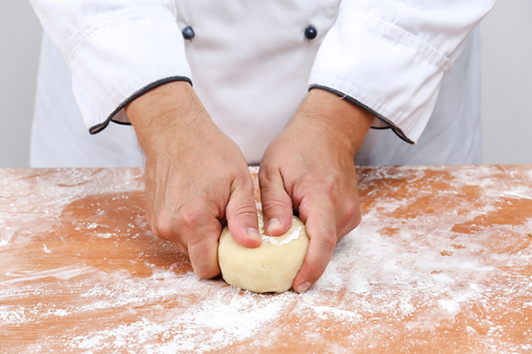
- Когда приготовленная масса остынет, сформируйте из нее шар. Если она не собирается, добавьте немного холодной воды.
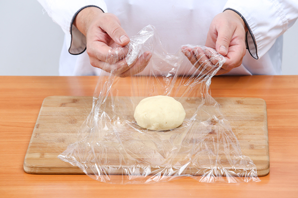
- Заверните шар в пищевую пленку и оставьте «отдохнуть» при комнатной температуре на 10 минут, затем уберите в холодильник.
Видео-рецепт
Как сделать цветной марципан
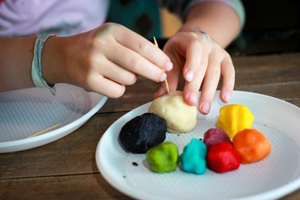
Теперь, когда вы знаете, как сделать марципан для покрытия торта и лепки фигурок, осталось определиться с тем, как его покрасить. Используйте сухие, гелевые или натуральные пищевые красители, добавляя немного в массу и вымешивая ее, как пластилин или тесто (если окрашиваемый кусок большой).
Если вы хотите использовать натуральные красители, то для коричневого цвета добавьте какао, для розового – сок свеклы, для синего – черники и т.д.
Совет!
Окрасьте сначала небольшой кусочек марципана, а затем соедините его с крупным светлым куском – так цвет получится равномерным.
Как хранить марципан
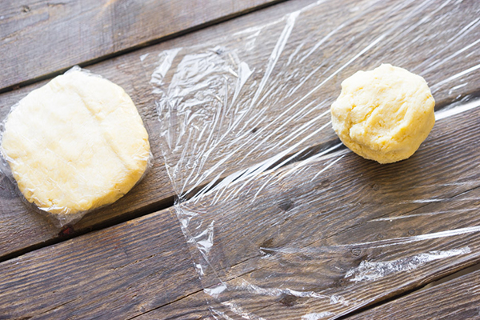
Как готовить марципан для торта – не секрет. Как хранить его – тоже. Завернув в пищевую пленку, в герметичной емкости его можно оставить при комнатной температуре. Благодаря сахару, натуральному консерванту, он не испортится в течение нескольких месяцев. Оставлять его на открытом воздухе нельзя – он быстро сохнет. Во время работы с ним отщипывайте кусок для лепки от общей массы, остальную часть плотно оборачивайте пленкой.
Хранить массу можно и в холодильнике, и даже в морозильнике – так срок ее годности вырастет в несколько раз. Перед работой с марципаном дайте ему достичь комнатной температуры после пребывания на холоде.